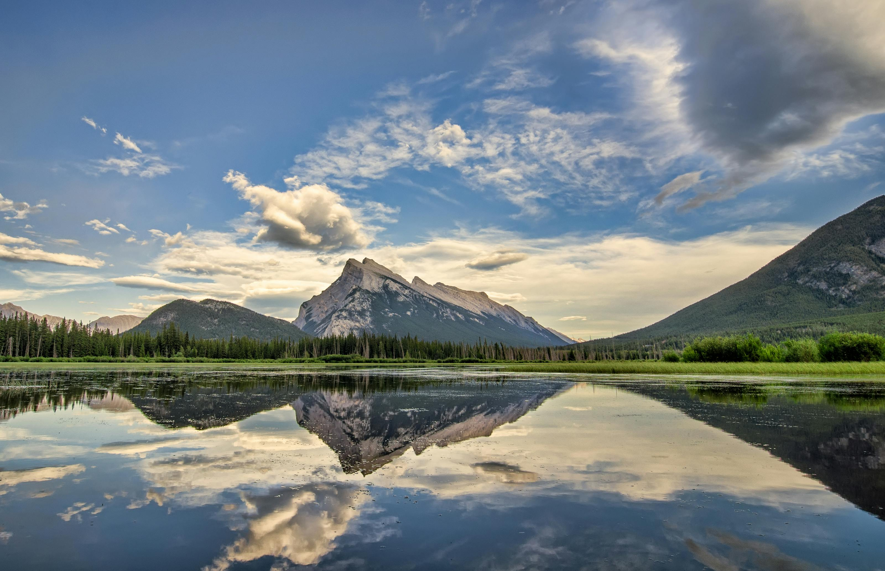

Molokai, Hawái
Hay quien dice que Molokai tiene el aspecto que hace 50 años tenían las islas hawaianas; otros afirman que es la imagen natural a la que debería aspirar el mundo en el futuro. Esta isla de 16 kilómetros de ancho, que no ha sido tocada por el desarrollo masivo, tiene más de 160 kilómetros de costas, cataratas escondidas, ruinas antiguas y el orgullo del patrimonio nativo de Hawái. ¿Qué es lo que no tiene? Pues, por ejemplo, semáforos.
Parque Nacional Jasper, Alberta, Canadá
El mayor parque nacional de las Rocosas canadienses, Jasper, es un lugar salvaje en toda la extensión de la palabra. Las aguas de color azul cian del río Athabasca fluye a lo largo de esta franja de naturaleza en el lejano oeste de Alberta, trazando su camino entre cañones escarpados e invitando a exploradores, senderistas y fotógrafos.
Monte Roraima, Venezuela
Los primeros exploradores europeos declararon al monte Roraima —un antiguo pico en forma de yunque que se levanta sobre la selva tropical en la que se unen Brasil, la Guayana y Venezuela— como lugar inaccesible. Sin embargo, se puede escalar, y la recompensa que te espera en la cumbre está formada por gruesos cúmulos de nubes que se separan para desvelar una panorámica de otras mesas y pastizales de sabana.
Molokai, Hawái
Un desfile de rocas espectaculares se extiende sobre la Tierra de Cañones de Utah, donde puedes contemplar el parque entero como una sola escultura impresionante. Es un patio tridimensional de roca suave, ríos gemelos, cañones estrechos, jardines de flores salvajes, campos escondidos y colores de otro mundo.